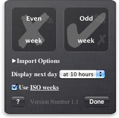
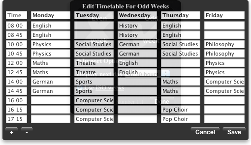

Student's timetable widget for the Mac OS X Dashboard.
This project is maintained by tilltheis
This is a Mac Dashboard widget to display a student's timetable.
The widget supports different timetables for odd and even weeks which either can be created using the built-in editor or alternatively can be imported from files in the common CSV format which every spreadsheet program can export to.
To import your timetable into the widget, simply drag'n'drop it onto the corresponding box on the widget's back. You can do so by starting to drag the CSV-file in Finder.app and then opening Dashboard.app by pressing F12 (or F4 on a Macbook) where you can drop it.
If you are not satisfied with anything concerning the widget or want to improve the translation please send me an email.
The contents of the import file should look like this:
| Monday | Tuesday | Wednesday | Thursday | Friday | |
|---|---|---|---|---|---|
| Class 1 | English | Physics | English | Physics | English |
| Class 2 | English | Physics | English | Physics | English |
| Class 3 | English | Physics | English | Physics | English |
| ... | |||||
This format is required but the first row (weekdays) as well as the first column (times) can be omitted (that has to be specified in the import options).
If you are curious what the "use ISO weeks" checkbox on the back side is good for: it's there because different countries use different systems for counting the weeks of a year. If weeks start on Sunday in your country you don't want to use ISO week counting (January 1st is always in week one), if weeks start on Monday then you want the ISO system. If you don't use different timetables for odd and even weeks you can safely ignore this option.

Great thanks goes to these artists for their work.
Mac OS X 10.4 Tiger is required. If you’re using Safari, click the download link. When the widget download is complete, show Dashboard, click the Plus sign to display the Widget Bar and click the widget’s icon in the Widget Bar to open it. If you’re using a browser other than Safari, click the download link. When the widget download is complete, unarchive it and place it in